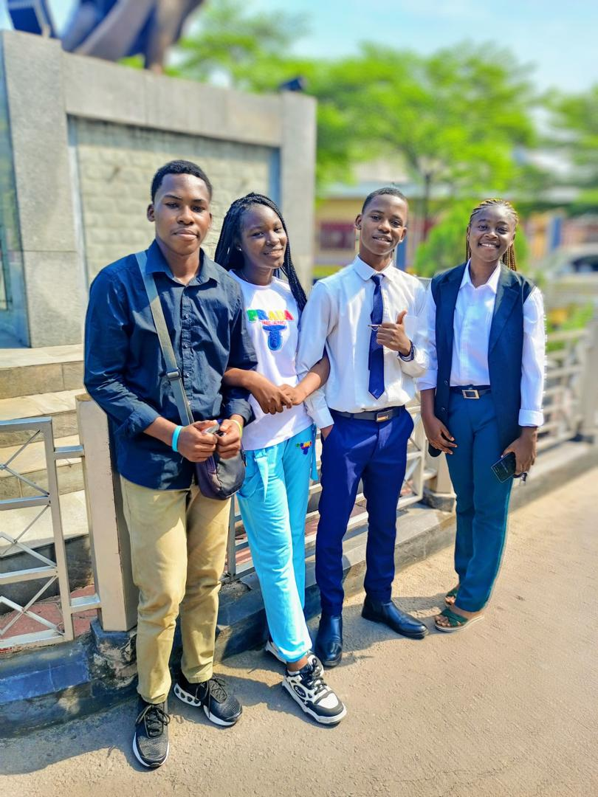

Notre Origine
Fondée en 2025 par une étudiante (Jeanne Ngbo) de l'Université Protestante au Congo, UpcDonat est née d'un constat simple : des milliers d'enfants et veuves de Kinshasa vivent dans des conditions extrêmement précaires sans aide suffisante.
Ce qui a commencé comme une initiative locale de collecte de vêtements et de fournitures scolaires est rapidement devenu un mouvement national grâce à l'engagement de centaines d'étudiants bénévoles.
250+Bénévoles actifs
15Quartiers couverts
3K+Bénéficiaires aidés
